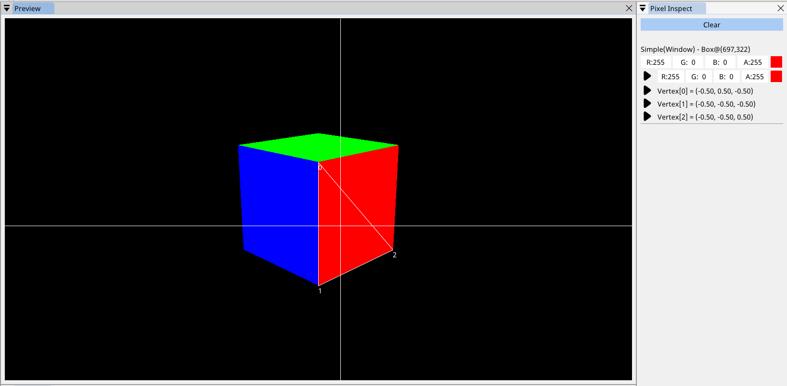

Debugger¶
SHADERed comes with a shader debugger. The debugger currently supports vertex, geometry, pixel & compute shaders.
Pixel Inspect¶
Pixel inspect contains the information about the selected pixel. To select a pixel, first pause the preview (you can do that by pressing the space key or by hitting the pause button in Preview’s statusbar - can be enabled in Options → Preview → Status bar) then left click on a pixel. SHADERed will also automatically select all related pixels in every render texture.
Click the “FETCH” button (if visible) to fetch additional information about the pixel.
The first color shown is the one that has been read directly from the texture. The second color is calculated by the debugger. If the second color strongly deviates (small differences can be ignored) from the first color, it means that an error has occured in the debugger while executing the shader. I highly suggest to avoid debugging such shaders.
The pixel inspect will also display information about the vertices that this pixel belongs to.
The “Pixel inspect” window will sometimes also display suggestions. These suggestions are currently only related to compute shaders. The suggestions probably won’t be correct some of the time - they are just guesses made by SHADERed that tell you which thread might be relevant to the selected pixel. You can get these suggestions by:
- inspecting a pixel of instanced object whose buffer is passed to a compute shader
- inspecting a pixel of VertexBuffer whose buffer is passed to a compute shader
- clicking on an image preview
The compute shader debugger runs also other threads in the group when necessary and so it supports memory synchronization.
Overlay¶
Once the debugger fetches information about the pixel, you will see lines that show you excatly what vertices and what pixel you’ve selected.
Debugging¶
To start the pixel shader debugger, press the play button next to the color in the pixel inspect window. To start the vertex shader debugger, press the play button next to the vertex that you want to debug. To start the geometry shader debugger, press the play button next to the “Geometry Shader” label in the “Pixel Insepct” window.
To start the compute shader debugger, either click on the play button next to the suggestion or right click on the ComputePass object → select “Debug” option → enter thread ID.
You have few options when the debugger starts:
- Stop → stops the debugger
- Step in → steps into the function
- Step out → steps out of the current function
- Step → steps over a single line - does not step in the function if there is one on that line
- Continue → executes the shader until it hits a breakpoint or completely finishes executing
Arrow on the sidebar will show you what line is next to be executed.
You can hover over variables to see their values while debugging. You can also hover over parenthesis to execute the expression located under the cursor.

Breakpoints¶
You can place breakpoints by clicking on the bar that contains the line numbers. Right click on the breakpoint will open a context menu with several options. You can temprorarily disable breakpoint or place a condition. The so called conditional breakpoint will stop the debugger only if the entered condition is met.
You can see list of breakpoints in the “Breakpoints” window.
Variables¶
In the variables window you can see all the variables that are accessible (globals, locals & arguments).

Watches¶
Watches window is similar to immediate window except it allows storing multiple expressions which will then be executed every time you step through your code.
To delete a watch, delete the expression from the textbox and hit Enter key.

Vector watch¶
Vector watch window is similar to “Watches” window. It allows you to store immediate expressions and also visualize their value in 3D space. This is useful when you want to see your vectors and points in 3D space.
If you want to see your expression as a vector, pass either a vec3/float3 or vec4/float4 expression whose 4th (w) component is equal to 0. However, if you want to see your expression as a point, pass a vec4/float4 expression whose 4th (w) component is not equal to 0.
You can change vector’s/point’s color by clicking on the colored square.
The sphere in the center represents the unit sphere.